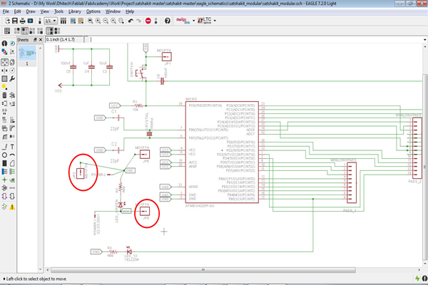

Project I3P - Step 2 : Electronic design and assembly
Activity 1: electronic components
Starting from the final features and task my future project will need to perform, I will decide on with electronic board I will require in order to link all sensors, program them to make them sense data, and communicate data.
Therefore, the starting point is to define the list of hardware/sensors I will use. After some research on the internet and specifically some realized projects that I could check on the internet like:
• Garduino
• DIY Moisture Monitor
• Garduino: Gardening + Arduino
• Open Garden
I decided to use the following hardware:
DHT11 temperature-humidity sensor: The DHT11 is a basic, ultra low-cost digital temperature and humidity sensor. It uses a capacitive humidity sensor and a thermistor to measure the surrounding air, and spits out a digital signal on the data pin (no analog input pins needed). You can check the sensor data sheet here
Soil Hygrometer Detection Module: A soil moisture sensor that can read the amount of moisture present in the soil surrounding it. It's a low tech sensor, but ideal for monitoring an urban garden, or pet plant's water level. This sensor uses the two probes to pass current through the soil, and then it reads that resistance to get the moisture level. More water makes the soil conduct electricity more easily (less resistance), while dry soil conducts electricity poorly (more resistance). You can check the sensor data sheet here
LCD Display HD44780: The Hitachi HD44780 LCD controller is a commonly used alphanumeric dot matrix liquid crystal display (LCD) controller developed by Hitachi. The control interface and protocol is a de-facto standard for this type of display. The character set of the controller includes ASCII characters, Japanese Kana characters, and some symbols in two 28 character lines. Using an extension driver, the device can display up to 80 characters. You can check the sensor data sheethere
Finally I analyzed each sensor technical data and connection schemes in order to understand how to design my board.
Activity 2: electronic production
At the beginning I have developed the entire project based on the satshakit electronic board desgin. Therefore, I followed these steps in to assemble and program the board:
I started from the following boad design:
Then as inside the Opendot FabLab we have experimented the new technique of printing the board. I have managed to use the laser cutter machine to engrave and cut the board more precisely using a FR-1 sheet. Therefore, I applied fiber laser to engrave and completely remove copper from the FR-1 surface, and then the C02 laser beams to cut the board.
After that, I soldered on it the following components:
• ATMEGA328P-AU
• 16Mhz/18pF Crystal
• 2 LEDs (Yellow and Green)
• A Switch
• Resistors and capacitors
• Connection pins
Once I finished soldering, I connected the board to the Arduino board in order to program it and upload the Arduino Bootloader. I followed this connection scheme:
Therefore, I followed these steps to upload Arduino bootloader:
1. open Arduino IDE
2. select proper programmer by clicking on Tools->Programmer
3. select Arduino UNO as Tools->Board
4. click on Tools->Burn Bootloader
From now on I will use the FTDI USB cable to upload and use sketch through the Arduino IDE.
After presenting the project to Neil, I followed his advice in order to redesign / modify a new board for my project using eagle, then share here the new board.
So I decided to use the stashkit as the starting point, and using eagle I re-created a new board with major differences related that my project requires 3 VCC and 3 GND extra pins. Therefore, I added all the components to the schematic view of eagle:

Once I finished and looked nice and without connections between traces, I left only the layer related to traces and pins and I exported the PNG image for final production
Then, I personalized as follow:
Activity 3: Sensor connection
Earlier I have analyzed each sensor technical data and connection schemes in order to understand how to design my board. These are the connection schemes of the three hardware:


Download Zone
The eagle design files are available for downloand here: